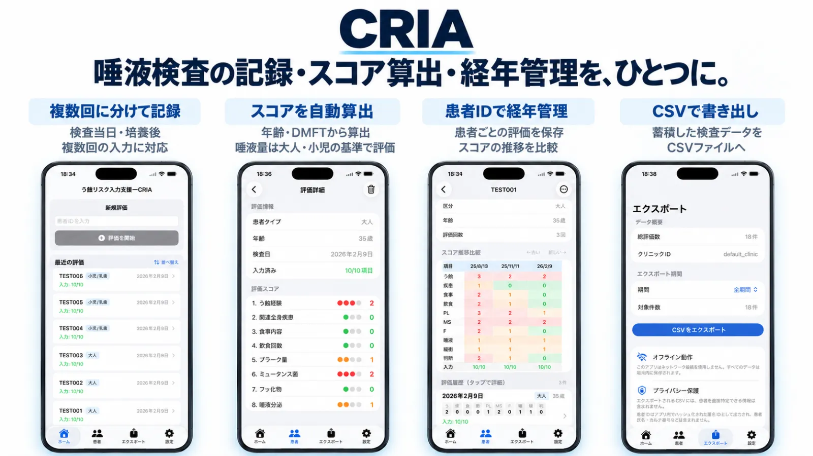

本文へ移動
g
greenhills-dc
アプリ
このサイトについて
02 — う蝕リスク入力支援
CRIA
唾液検査の記録・スコア算出・経年管理を、ひとつに。
唾液検査の入力、スコア算出、経年変化の確認までをひとつの流れで。
iPhone
iPad

App Store（iPhone・iPad）
↗
サポート
OTHER APPLICATIONS
他のアプリ
01
Custodia
歯科医院統合管理
くわしく見る
↗
03
D-PLoT
口腔内規格写真プロッター
くわしく見る
↗
04
Stockage ＆ Stockage Mobile
歯科材料・消耗品の在庫管理
くわしく見る
↗
05
LabOrder
歯科技工指示書管理
くわしく見る
↗
06
Dental Cloud Share
歯科クラウド情報共有
くわしく見る
↗
アプリ一覧へ戻る
↗